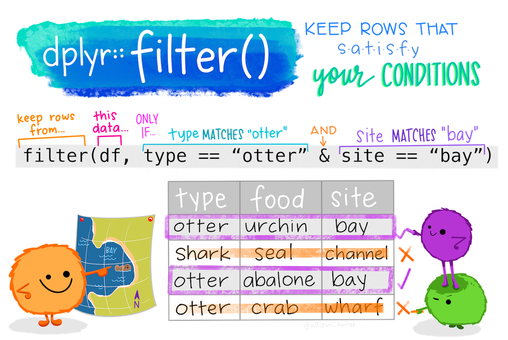
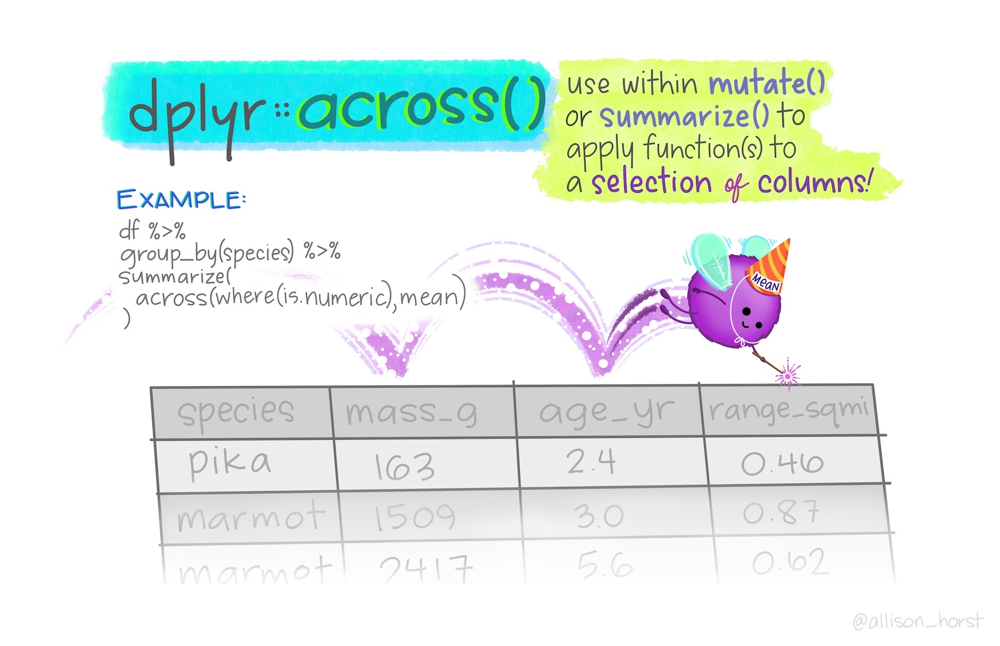

5 Datenaufbereitung mit `dplyr`


5.1 Einführung
Dplyr ist Teil des `tidyverse` Packages und ermöglicht es, Daten sehr einfach zu manipulieren und in eine Form zu bringen, um diese zu analysieren. Der größte Vorteil dabei ist die einfache Syntax des Packages. Diese ermöglicht es, komplexe Operationen und Umformungen mit relativ wenigen Codezeilen zu realisieren. Um dplyr kennenzulernen, werden wir mit dem Starwars Datensatz arbeiten. Dieser enthält verschiedenen Informationen zu unterschiedlichen Charakteren der Star Wars Saga, wie zum Beispiel das Alter, Geschlecht, Heimatplanet oder Alienrasse. Zunächst lesen wir den Datensatz mit readRDS() ein und verschaffen uns dann einen ersten Überblick über den Datensatz:
# Der Datensatz befindet sich im Buch im Verzeichnis "Data".
# Daher muss der Pfad beim einlesen des Datensatzes mit angegeben werden.
starwars <- readRDS("starwars.RDS") %>% drop_na()Wir benutzen den head() Befehl, um uns die ersten 5 Zeilen des Datensatzes anzeigen zu lassen.
## # A tibble: 5 × 11
## name height mass hair_color skin_color eye_color Age
## <chr> <int> <dbl> <fct> <fct> <fct> <dbl>
## 1 Luke S… 172 77 blond fair blue 19
## 2 Darth … 202 136 none white yellow 41.9
## 3 Leia O… 150 49 brown light brown 19
## 4 Owen L… 178 120 brown, gr… light blue 52
## 5 Beru W… 165 75 brown light blue 47
## # … with 4 more variables: sex <fct>, gender <fct>,
## # homeworld <chr>, species <chr># Analog können wir auch mit den Befehl `tail()`, die letzten n Zeilen eines Datensatzes anzeigen.
tail(starwars,5)## # A tibble: 5 × 11
## name height mass hair_color skin_color eye_color Age
## <chr> <int> <dbl> <fct> <fct> <fct> <dbl>
## 1 Lumina… 170 56.2 black yellow blue 58
## 2 Barris… 166 50 black yellow blue 40
## 3 Dooku 193 80 white fair brown 102
## 4 Jango … 183 79 black tan brown 66
## 5 Padmé … 165 45 brown light brown 46
## # … with 4 more variables: sex <fct>, gender <fct>,
## # homeworld <chr>, species <chr>Nachdem wir nun eine erste “Augapfeldiagnostik” des Datensatzes betrieben haben, sollten wir uns nun die einzelnen Variablen genauer ansehen. Um einen ersten Überblick in die unterschiedlichen Parameter der Variablen zu bekommen, eignet sich der summary() Befehl. Dieser berechnet die wichtigstens Kennwerte der im Datensatz enthaltenen Variablen wie Mittelwert, Median, Quantile, Minimum, Maximum und fehlende Werte.
## name height mass
## Length:29 Min. : 88 Min. : 20.00
## Class :character 1st Qu.:170 1st Qu.: 75.00
## Mode :character Median :180 Median : 79.00
## Mean :178 Mean : 77.77
## 3rd Qu.:188 3rd Qu.: 83.00
## Max. :228 Max. :136.00
##
## hair_color skin_color eye_color
## none :9 fair :7 brown :10
## brown :7 light :6 blue : 8
## black :6 dark :2 yellow : 4
## blond :2 orange :2 hazel : 2
## white :2 pale :2 orange : 2
## auburn, white:1 yellow :2 black : 1
## (Other) :2 (Other):8 (Other): 2
## Age sex gender
## Min. : 8.00 female : 6 feminine : 6
## 1st Qu.: 31.00 hermaphroditic: 0 masculine:23
## Median : 46.00 male :23
## Mean : 51.29 none : 0
## 3rd Qu.: 57.00
## Max. :200.00
##
## homeworld species
## Length:29 Length:29
## Class :character Class :character
## Mode :character Mode :character
##
##
##
## 5.2 `dplyr`: Die wichtigsten Befehle
Wie am Anfang des Kapitels bereits erwähnt, ermöglicht es dplyr mit relativ einfachen Mitteln, komplexe Operationen und Transformationen in Datensätzen vorzunehmen. Hierzu hat dplyr eine eigene Syntax entwickelt, die sich sehr stark von der ursprünglichen R-Syntax unterscheidet. Diese baut auf wenigen, relativ intuitiven Befehlen auf, welche verkettet werden können. Zunächst eine Übersicht der wichtigsten Befehle:
filter()- Filtern von Beobachtungen nach einem bestimmten Kriteriumarrange()- Reihen neu Sortierenselect()- Auswahl von Variablen nach deren Namemutate()- Erstellen von neuen Variablen aus bereits existierendensummarise()- Viele Werte zu einem einzelnen Wert zusammenfassengroup_by()- Gruppieren von Daten nach bestimmten Variablen in Kombination mit anderen Funktionen
Der vielleicht wichtigste Befehl ist der group_by() Befehl, mit dem die oben genannten Befehle auf einzelne Gruppen innerhalb eines Datensatzes anwendbar sind.
Diese sechs sogennaten "Verben" bilden die Grundlage von dplyr. Mit ihnen ist es möglich mehrere einfache Schritte miteinander zu verketten, um ein komplexes Ergebnis zu erzielen. Alles Befehle funktionieren auf die gleiche Art und Weise. Jede Operation ist durch die gleiche Struktur gekennzeichnet:
Das erste Argument ist ein Dataframe.
Die nachfolgenden Argumente beschreiben, was mit dem Dataframe geschehen soll, wobei die Variablennamen (ohne Anführungszeichen) verwendet werden.
Das Ergebnis ist ein neuer Dataframe
5.3 Beispiel: Filtern von Beobachtungen mit filter()
Um effektiv nach bestimmten Werten zu filtern, müssen für jede Operation die Kriterien nach denen gefiltetert werden soll definiert werden. Dies geschiet mit Hilfe der bereits eingeführten logischen Operatoren. Im ersten Beispiel sollen alle Beobachtungen, in welchen die Variablen height und mass größer als 190 bzw. 90 sind gefiltert werden:
# Es werden hier nun alle Helden aus dem Datensatz ausgegeben, die größer als 1,90 m und schwerer als 90 Kilogramm sind
filter(starwars, height > 190 & mass > 90)## # A tibble: 2 × 11
## name height mass hair_color skin_color eye_color Age
## <chr> <int> <dbl> <fct> <fct> <fct> <dbl>
## 1 Darth … 202 136 none white yellow 41.9
## 2 Chewba… 228 112 brown unknown blue 200
## # … with 4 more variables: sex <fct>, gender <fct>,
## # homeworld <chr>, species <chr>5.3.1 Filtern von Strings / Factors
Logische Operatoren lassen sich sehr gut auf numerische / bzw. kontinuierliche Variablen anwenden, um diese nach bestimmten Kriterien zu filtern. Wenn mit Strings oder Factors gearbeitet wird, sucht man häufig nach bestimmen pattern in den Strings, wie hier bei den Namen.

Sollen nun alle Beobachtungen mit “Skywalker” im Namen gefiltert werden, kann die grepl() Funktion aus R genutzt werden. Diese prüft, ob eine Zeichenfolge vorhanden ist oder nicht und gibt dann entsprechend TRUE oder FALSE aus, was ein filtern ermöglicht. Dies ist vorallem bei Strings, die aus mehr als einem Wort bestehen, dass durch ein Leerzeichen getrennt ist sehr praktisch. Bei Strings die nur aus einem Wort bestehen oder Factors, kann auch mit einem einfach == Vergleich gearbeitet werden: Beispiel:
# Hier werden alle Beobachtungen mit der Spezies "Human" gefiltert.
filter(starwars, species == "Human")## # A tibble: 18 × 11
## name height mass hair_color skin_color eye_color Age
## <chr> <int> <dbl> <fct> <fct> <fct> <dbl>
## 1 Luke … 172 77 blond fair blue 19
## 2 Darth… 202 136 none white yellow 41.9
## 3 Leia … 150 49 brown light brown 19
## 4 Owen … 178 120 brown, gr… light blue 52
## 5 Beru … 165 75 brown light blue 47
## 6 Biggs… 183 84 black light brown 24
## 7 Obi-W… 182 77 auburn, w… fair blue-gray 57
## 8 Anaki… 188 84 blond fair blue 41.9
## 9 Han S… 180 80 brown fair brown 29
## 10 Wedge… 170 77 brown fair hazel 21
## 11 Palpa… 170 75 grey pale yellow 82
## 12 Boba … 183 78.2 black fair brown 31.5
## 13 Lando… 177 79 black dark brown 31
## 14 Lobot 175 79 none light blue 37
## 15 Mace … 188 84 none dark brown 72
## 16 Dooku 193 80 white fair brown 102
## 17 Jango… 183 79 black tan brown 66
## 18 Padmé… 165 45 brown light brown 46
## # … with 4 more variables: sex <fct>, gender <fct>,
## # homeworld <chr>, species <chr># Analog hierzu kann genau so auch nach bestimmten Faktorstufen gefiltert werden:
filter(starwars, sex == "male")## # A tibble: 23 × 11
## name height mass hair_color skin_color eye_color Age
## <chr> <int> <dbl> <fct> <fct> <fct> <dbl>
## 1 Luke … 172 77 blond fair blue 19
## 2 Darth… 202 136 none white yellow 41.9
## 3 Owen … 178 120 brown, gr… light blue 52
## 4 Biggs… 183 84 black light brown 24
## 5 Obi-W… 182 77 auburn, w… fair blue-gray 57
## 6 Anaki… 188 84 blond fair blue 41.9
## 7 Chewb… 228 112 brown unknown blue 200
## 8 Han S… 180 80 brown fair brown 29
## 9 Wedge… 170 77 brown fair hazel 21
## 10 Palpa… 170 75 grey pale yellow 82
## # … with 13 more rows, and 4 more variables: sex <fct>,
## # gender <fct>, homeworld <chr>, species <chr># Um komplexere Strings zu filtern, kann die grepl() funktion integriert werden. Hier werden alle Beocbachtungen gefiltert, welche innerhalb der Variable "name" den String "Skywalker" enthalten. So erhalten wir alle Skywalker Charaktere, die im Datensatz vorhanden sind:
filter(starwars, grepl("Skywalker", name))## # A tibble: 2 × 11
## name height mass hair_color skin_color eye_color Age
## <chr> <int> <dbl> <fct> <fct> <fct> <dbl>
## 1 Luke S… 172 77 blond fair blue 19
## 2 Anakin… 188 84 blond fair blue 41.9
## # … with 4 more variables: sex <fct>, gender <fct>,
## # homeworld <chr>, species <chr>5.4 Dplyr: Der Piping Operator `%>%`
Die vielleicht wichtigste Funktion in dplyr ist der sogenannte “piping operator” %>%. Mit diesem können beliebig viele Befehle kombiniert, oder auch “verkettet” werden, um einen Datensatz umzuformen. Hierbei bleiben die oben vorgestellten Prinzipien gültig:
Das erste Argument ist ein Dataframe.
Die nachfolgenden Argumente beschreiben, was mit dem Dataframe geschehen soll, wobei die Variablennamen (ohne Anführungszeichen) verwendet werden.
Das Ergebnis ist ein neuer Dataframe
In diesem Kapitel werden nur die basis dplyr-Funktionen besprochen und wie diese in einer Pipline integriert werden können. Prinzipiell lassen sich jedoch auch alle anderen R-Befehle in eine “Pipeline” integrieren, wie zum Beispiel statistische Transformationen. Es spielt keine Rolle, welche Befehle innerhalb einer Pipeline ausgeführt werden, solange die oben genannten Prinzipien eingehalten werden.
Hier ein sehr fortgeschrittenes Beispiel, wie dies aussehen kann. Es wurden in diesem Beispiel Funktionen aus unterschiedlichen Paketen verwendet (z.B. fisherz() aus dem psych Package), als auch Funktionen von R (cor()) um aus einem sehr großen Datensatz mit 1 Millionen Beobachtungen, mittlere Korrelationen zwischen unterschiedlichen Variablen zu berechnen:
# df_clean %>% group_by(N,K,Retrievals) %>%
# summarise(corA = cor(mu_est_a, mu_real_a),
# corC = cor(mu_est_c, mu_real_c)) %>%
# mutate(z_a = fisherz(corA), z_c = fisherz(corC)) %>%
# filter(Retrievals== 100) %>%
# group_by(N,K) %>%
# summarise(mean_a_100 = mean(z_a),
# mean_c_100 = mean(z_c),
# range_cor = range(mean_a_100),
# range_cor = range(mean_a_100)) %>%
# mutate(meanCorA_100 = fisherz2r(mean_a_100),
# meanCorC_100 = fisherz2r(mean_c_100)) %>%
# select(-c(mean_a_100, mean_c_100))5.5 Beispiel
Um nun verschiedene Operationen zu einer Pipeline zu verketten, können wir zwischen die einzelnen dplyr Befehle den Pining Operator %>% schalten.
Soll zum Beispiel der Mittelwert des Alters der Helden aus dem Starwars Datensatz für verschiedene Gruppen (hier Heimatwelten und Spezies) berechnet werden, können hierfür der group_by() und der summarise() Befehl kombiniert werden. Zunächst Gruppieren wir den Datensatz nach den Variablen species und homeworld und berechnen dann mit summarise() eine neue Variable mean_Age für jede Gruppenkombination. Hierbei wird innerhalb von summarise() der Mittelwert der Age Variablen berechnet und in der neuen Variablen mean_Age gespeichert. Hierbei gelten die oben genannten Prinzipien, welche dann mit %>% verkettet werden:
Das erste Argument ist ein Dataframe:
starwarsDie nachfolgenden Argumente beschreiben, was mit dem Dataframe geschehen soll:
group_by(species, homeworld)undsummarise(mean_Age=mean(Age))Das Ergebnis ist ein neuer Dataframe, der nur noch die Gruppenvariablen
HomeworldundSpecies, sowie die neu berechnete Variablemean_Agesenthält:
# Dazu benutzen wir den Piping Operator %>%, um die Befehle zu verketten:
starwars %>%
group_by(species, homeworld) %>%
summarise(mean_Age=mean(Age))## `summarise()` has grouped output by 'species'. You can override using the `.groups` argument.## # A tibble: 21 × 3
## # Groups: species [11]
## species homeworld mean_Age
## <chr> <chr> <dbl>
## 1 Cerean Cerea 92
## 2 Ewok Endor 8
## 3 Gungan Naboo 52
## 4 Human Alderaan 19
## 5 Human Bespin 37
## 6 Human Concord Dawn 66
## 7 Human Corellia 25
## 8 Human Haruun Kal 72
## 9 Human Kamino 31.5
## 10 Human Naboo 64
## # … with 11 more rowsNatürlichsprachlich dargestellt werden also folgende Operationen ausgeführt:
- Nehme den Datensatz `starwars` (1. Zuerst der Dataframe):
`starwars %>%`Gruppiere diesen nach Spezies und Heimatwelt (1. Verarbeitungsschritt):
group_by(species, homeworld) %>%Berechne dann für jede dieser Gruppen den Mittelwert für die Variable “Age” (2. Schritt):
`summarise(meanAge=mean(Age)`Da nun der Piping-Operator die einzelnen Elemente miteinander verkettet, ist es nicht mehr notwendig, den Datensatz innerhalb der einzelnen Befehle als Argument anzugeben, so wie im Beipsiel von filter(). Es muss lediglich der Ausgangsdatensatz am Anfang der Pipeline angeben werden.
5.6 Dplyr : Neue Variablen mit mutate() berechnen

Der letzte wichtige Befehl in dplyr ist mutate() bzw. across(). Mit mutate() bzw. across() ist es möglich eine Variable bzw. mehrere Variablen umzuformen, oder neu zu berechnen. Dies wird hier anhand einer z-Tranformation erläutert. Dies ermöglicht der Befehl scale(), der standardmäßig in R vorhanden ist.
5.7 Beispiel
## # A tibble: 29 × 4
## height mass z_height[,1] z_mass[,1]
## <int> <dbl> <dbl> <dbl>
## 1 172 77 -0.265 -0.0335
## 2 202 136 1.07 2.52
## 3 150 49 -1.24 -1.25
## 4 178 120 0.00153 1.83
## 5 165 75 -0.576 -0.120
## 6 183 84 0.224 0.270
## 7 182 77 0.179 -0.0335
## 8 188 84 0.446 0.270
## 9 228 112 2.22 1.48
## 10 180 80 0.0904 0.0965
## # … with 19 more rows## # A tibble: 29 × 4
## height mass height_z[,1] mass_z[,1]
## <int> <dbl> <dbl> <dbl>
## 1 172 77 -0.265 -0.0335
## 2 202 136 1.07 2.52
## 3 150 49 -1.24 -1.25
## 4 178 120 0.00153 1.83
## 5 165 75 -0.576 -0.120
## 6 183 84 0.224 0.270
## 7 182 77 0.179 -0.0335
## 8 188 84 0.446 0.270
## 9 228 112 2.22 1.48
## 10 180 80 0.0904 0.0965
## # … with 19 more rowsIn diesem Beispiel wurden zunächst nur height und mass mit dem select() Befehl ausgewählt, daher werden auch nur diese beiden Spalten am Ende der Pipline im Datensatz angezeigt. Dies kann hilfreich sein, wenn man einen Datensatz mit sehr vielen Variablen analysieren muss, von denen nur einige wenige interessant sind. Dies ist z.B. bei Fragebögen der Fall, die unterschiedliche Facetten erfassen.
Der nächste Befehl mutate() besteht immer aus einer Operation, die mit einer Spalte im Datensatz durchgeführt wird. Im Beispiel oben fügen werden die Spalten z_height und z_mass berechnet, die sich jeweils aus scale(SPALTENNAME) zusammensetzen und die z-Werte der jeweiligen Variablen ausgeben.
Anstatt beide Variablen einzeln zu transformieren, kann den Befehl scale() auch direkt auf mehrere Spalten angewendet werden. Dazu kann der across() Befehl verwendet werden.

Hier muss innerhalb von mutate() einfach mit across(c(SPALTE1, SPALTE2)) ein Vektor der zu tranformierenden Spalten übergeben werden, sowie die Funktion(en), welche auf die Spalten angewand werden soll. Dies muss dann wie folgt definiert werden:
mutate(across(c(height,mass), list(z=scale)))
Diese Schreibweise hat den Vorteil das
In der
list()mehrere Befehle übergeben werden könnenDie Originalspalten beibehalten werden
Den neuen Spalten direkt einen Suffix zugewiesen werden kann.
Dieser wird automatisch als “_suffix” an die neue Variable angehängt.
## # A tibble: 29 × 13
## name height mass hair_color skin_color eye_color Age
## <chr> <int> <dbl> <fct> <fct> <fct> <dbl>
## 1 Luke … 172 77 blond fair blue 19
## 2 Darth… 202 136 none white yellow 41.9
## 3 Leia … 150 49 brown light brown 19
## 4 Owen … 178 120 brown, gr… light blue 52
## 5 Beru … 165 75 brown light blue 47
## 6 Biggs… 183 84 black light brown 24
## 7 Obi-W… 182 77 auburn, w… fair blue-gray 57
## 8 Anaki… 188 84 blond fair blue 41.9
## 9 Chewb… 228 112 brown unknown blue 200
## 10 Han S… 180 80 brown fair brown 29
## # … with 19 more rows, and 6 more variables: sex <fct>,
## # gender <fct>, homeworld <chr>, species <chr>,
## # height_z <dbl[,1]>, mass_z <dbl[,1]>